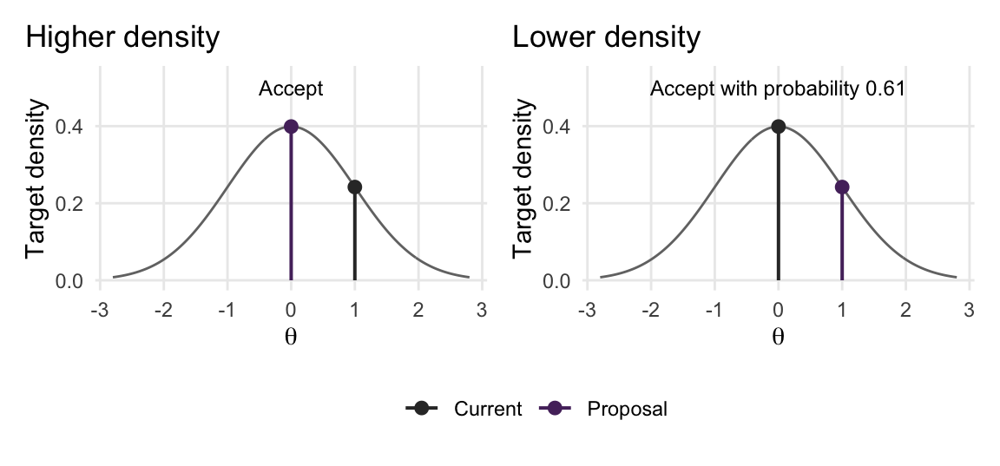
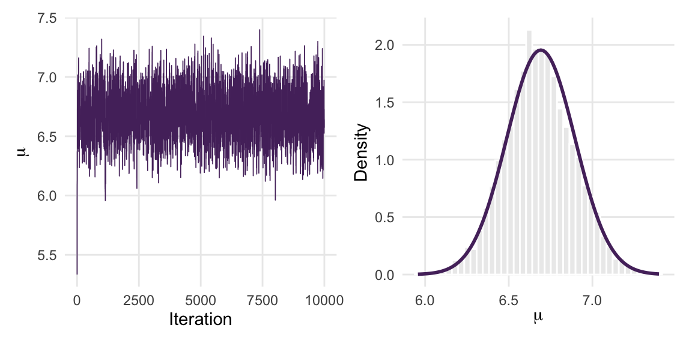
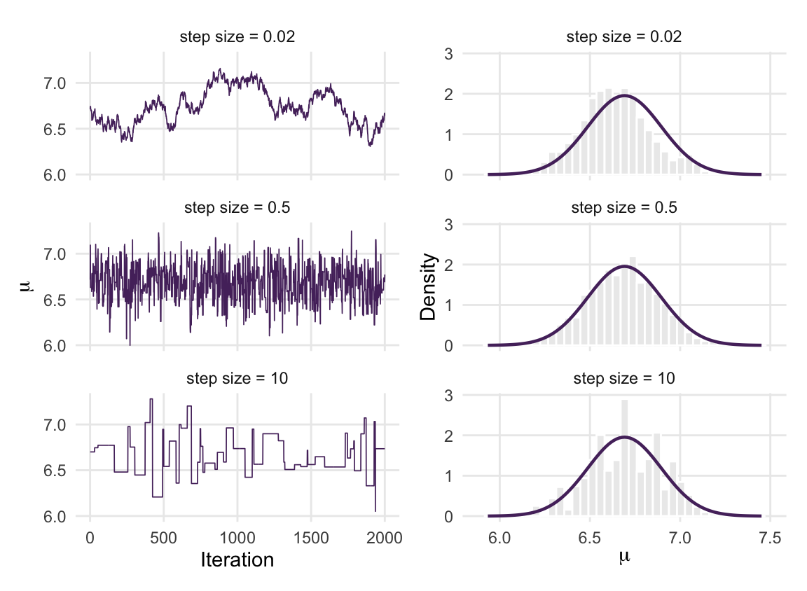
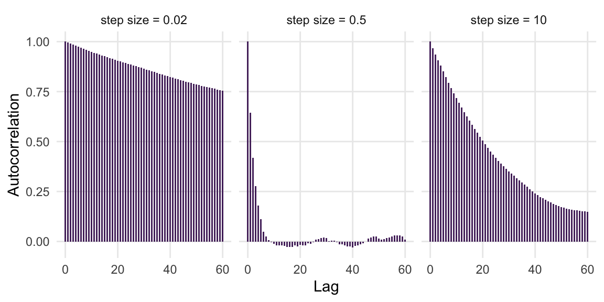
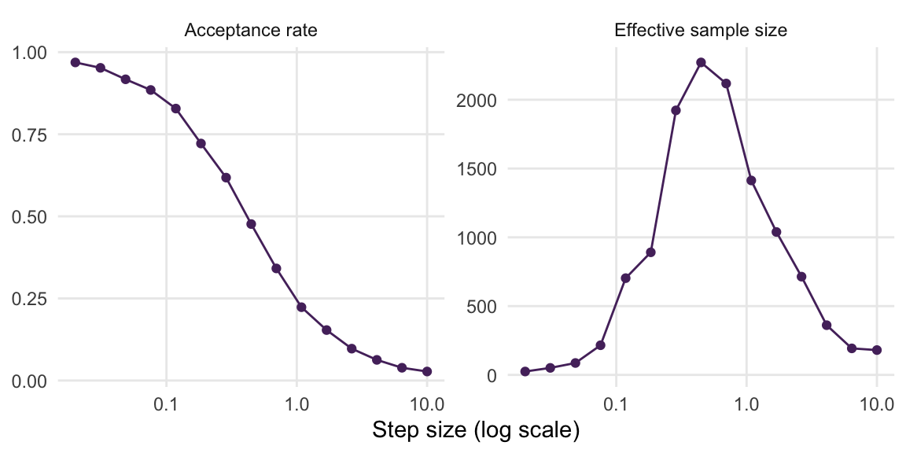
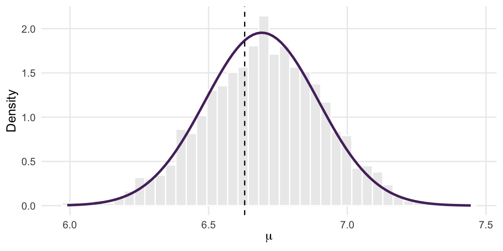
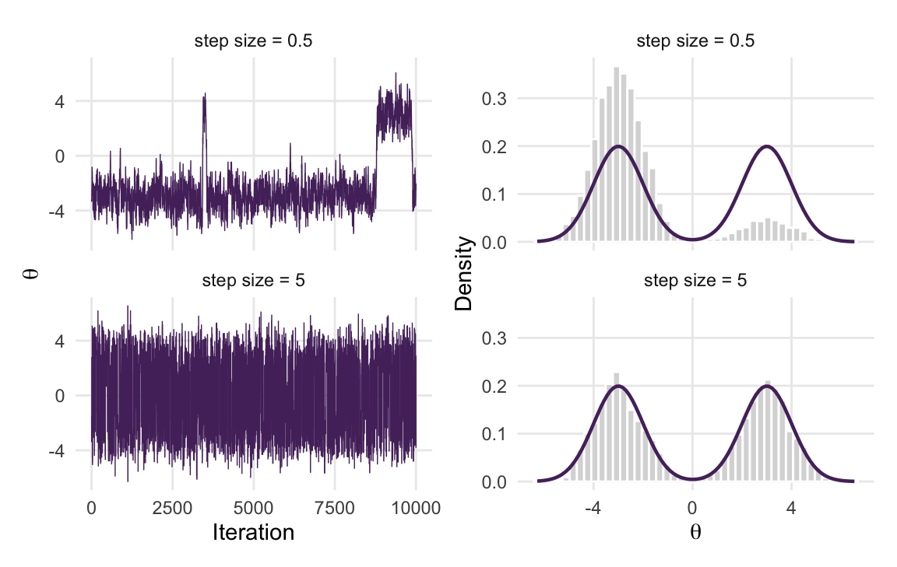
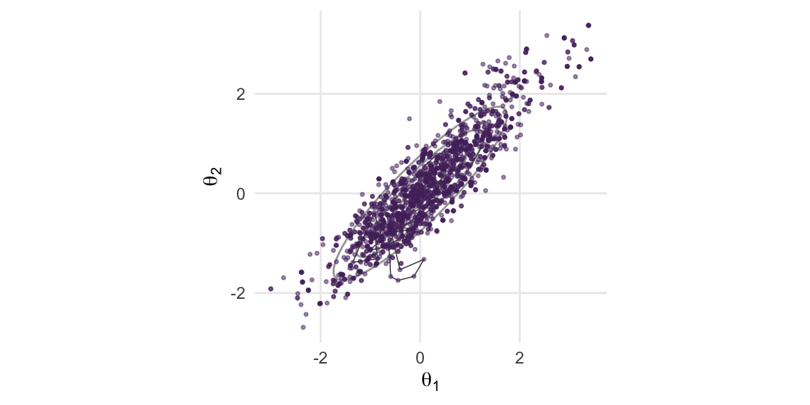
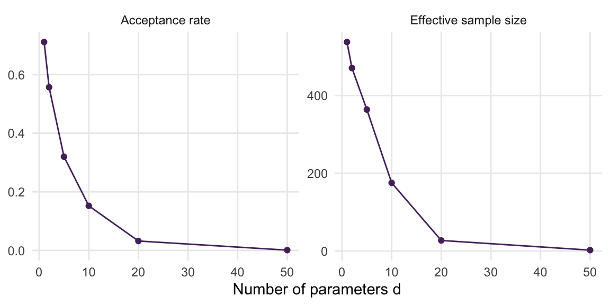

library(tidyverse)
library(posterior)
library(patchwork)
library(mvtnorm)5 The Metropolis Algorithm
Suppose you ask 20 first-year psychology students how many hours they slept last night. You would like to learn the average number of hours, \(\mu\), that first-year students sleep. You choose a prior and a sampling model, then combine them to obtain an unnormalized posterior. How can you generate draws from it?
Chapter 2 introduced conjugate updates and grid approximation. Chapter 4 used Stan to generate posterior draws and examined their accuracy. Here we construct a sampler ourselves: the Metropolis algorithm. It proposes a new parameter value, compares the posterior density there with the density at the current value, and decides whether to move. Repeating this procedure produces a Markov chain designed to have the posterior as its stationary distribution. Stan usually uses Hamiltonian Monte Carlo, developed in Chapter 10 (Hamiltonian Monte Carlo); Metropolis gives us a simpler algorithm with which to study how proposals and acceptance decisions work.
Run the following setup before working through the examples.
Goals
- Explain proposal symmetry and calculate Metropolis acceptance probabilities, including decisions on the log scale.
- Implement a Metropolis sampler in R and check its output against a known posterior.
- Verify detailed balance and distinguish stationarity from the conditions needed to explore the target.
- Explain the step-size trade-off and tune a sampler using the acceptance rate, trace plots, and the effective sample size.
- Sample from a posterior that has no closed form by writing its log density from a likelihood and a prior.
- Diagnose implementation errors using the states recorded after acceptance and rejection.
- Extend the algorithm to several parameters and see why plain Metropolis struggles as the number of parameters grows.
5.1 The idea: propose, compare, accept or reject
We want a Markov chain whose stationary distribution has a chosen density \(f(\theta)\), such as a posterior density. The Metropolis algorithm (Metropolis et al., 1953) uses evaluations of this density and a proposal distribution for candidate next states. We need to be able to evaluate the target up to a constant; conjugacy is not required.
In this chapter, a proposal is drawn from a Normal distribution centered on the current state: \[ \theta^\star\sim\text{N}\!\left(\theta^{(t)},c^2\right),\qquad c>0. \] The standard deviation \(c\) is the step size. It controls how far proposals tend to fall from the current state. For example, with \(c=0.5\), proposals one unit above and one unit below the current value are equally far from the center and have the same proposal density.
Metropolis requires more than this left–right symmetry around one state. Write \(q(b\mid a)\) for the density of proposing \(b\) when the chain is at \(a\). The proposal must be symmetric between states: \[ q(b\mid a)=q(a\mid b). \] A Normal proposal with the same step size at every state has this property. Proposing 7 from a current value of 6 involves a displacement of \(+1\); proposing 6 from 7 involves a displacement of \(-1\). These have equal density under the centered Normal noise. The target densities at 6 and 7 may nevertheless differ. Proposal symmetry concerns how candidates are generated; the acceptance step accounts for their different target densities.
Compare the proposed and current values using \[ r=\frac{f(\theta^\star)}{f(\theta^{(t)})}. \] If \(r\geq1\), the target density is at least as high at the proposal, and we accept it. If \(r<1\), we accept with probability \(r\). A proposal with half the current target density is therefore accepted half the time. If it is rejected, the next state equals the current state, which is recorded again.
The Metropolis algorithm
Given a target density \(f(\theta)\) that we can evaluate up to a constant, a current state \(\theta^{(t)}\), and a symmetric proposal distribution with step size \(c\):
- Propose. Draw \(\theta^\star \sim \text{N}(\theta^{(t)}, c^2)\).
- Compare. Compute \(r = f(\theta^\star) / f(\theta^{(t)})\).
- Accept or reject. If \(r \geq 1\), set \(\theta^{(t+1)} = \theta^\star\). Otherwise draw \(u \sim \text{Unif}(0,1)\) and set \(\theta^{(t+1)} = \theta^\star\) if \(u < r\), and \(\theta^{(t+1)} = \theta^{(t)}\) if not.
Repeat for \(t = 0, 1, 2, \ldots\), starting at a value where the log target is finite. After \(T\) iterations, the recorded states are \(\theta^{(1)},\ldots,\theta^{(T)}\); the starting value \(\theta^{(0)}\) is specified separately.
The normalizing constant cancels in \(r\). For a posterior, \[ \frac{f(\theta^\star\mid y)}{f(\theta^{(t)}\mid y)} =\frac{f(y\mid\theta^\star)f(\theta^\star)/f(y)} {f(y\mid\theta^{(t)})f(\theta^{(t)})/f(y)} =\frac{f(y\mid\theta^\star)f(\theta^\star)} {f(y\mid\theta^{(t)})f(\theta^{(t)})}. \] We can therefore evaluate likelihood times prior at the two values without calculating \(f(y)\).
Figure 5.1 compares two proposals for a standard Normal target. The proposal in the left panel has a higher target density and is always accepted. The proposal in the right panel has a lower target density and may be accepted or rejected. Allowing moves to lower-density regions lets the chain explore the spread of the distribution, rather than only seeking its peak.

5.1.1 Following three decisions
Consider the unnormalized standard Normal target \(f(\theta)\propto e^{-\theta^2/2}\), starting at \(\theta^{(0)}=0\). Suppose the proposal and Uniform draws are those in Table 5.1. These are three illustrative decisions, with each proposal made from the state left by the preceding decision.
| Iteration | Current state | Proposal | Ratio \(r\) | Uniform draw \(u\) | Decision | Recorded state |
|---|---|---|---|---|---|---|
| 1 | 0 | 1 | \(e^{-1/2}\approx0.607\) | 0.80 | Reject | 0 |
| 2 | 0 | 1 | \(e^{-1/2}\approx0.607\) | 0.40 | Accept | 1 |
| 3 | 1 | 0.5 | \(e^{3/8}\approx1.455\) | 0.90 | Accept | 0.5 |
In the first row, \(0.80>0.607\), so the proposal is rejected. The second proposal is consequently made from 0 again. This time \(0.40<0.607\), so the chain moves to 1. In the third row the target density increases, and the proposal is accepted regardless of the Uniform draw. The three recorded states are \((0,1,0.5)\). Keeping the first recorded 0 is part of the algorithm: one iteration has passed even though the chain did not move.
Quiz yourself!
The chain is at \(\theta^{(t)} = 1\) where \(f(1) = 0.24\), and the proposal is \(\theta^\star = 2.5\) where \(f(2.5) = 0.02\). Given this proposal, what is its acceptance probability? And if instead the proposal were \(\theta^\star = 0.3\) with \(f(0.3) = 0.38\)?
5.2 A first Metropolis sampler in R
Let’s return to the sleep survey. We use the following illustrative answers, in hours:
sleep_hours <- c(6.5, 7.2, 5.8, 6.9, 7.5, 6.1, 5.5, 7.0, 6.4, 8.1,
6.7, 5.9, 7.3, 6.2, 6.8, 7.7, 5.6, 6.3, 7.1, 6.0)We model the answers as independent given \(\mu\), with \(Y_i\mid\mu\sim\text{N}(\mu,1^2)\). The sampling standard deviation of one hour is treated as known. We give \(\mu\) a \(\text{N}(7,0.5^2)\) prior, expressing an expectation of about seven hours, with most prior probability between six and eight hours.
This is the Normal–Normal model in Chapter 2. To see its posterior, combine the quadratic terms from the likelihood and prior: \[ \begin{aligned} \log f(\mu\mid y) &=-\frac12\left[\sum_{i=1}^n(y_i-\mu)^2 +\frac{(\mu-7)^2}{0.5^2}\right]+C\\ &=-\frac12\left[(n+4)\mu^2 -2\left(\sum_i y_i+28\right)\mu\right]+C. \end{aligned} \] The \(4\) is the prior precision \(1/0.5^2\), and \(28=7\times4\). Completing the square gives a Normal posterior with variance \(\tau_n^2=1/(n+4)\) and mean \(\mu_n=(\sum_i y_i+28)/(n+4)\). Section D.4 explains this algebra step by step.
n <- length(sleep_hours)
tau2_n <- 1 / (1 / 0.5^2 + n / 1^2)
mu_n <- tau2_n * (7 / 0.5^2 + sum(sleep_hours) / 1^2)
c(sample_mean = mean(sleep_hours), posterior_mean = mu_n,
posterior_sd = sqrt(tau2_n))
#> sample_mean posterior_mean posterior_sd
#> 6.6300000 6.6916667 0.2041241With \(n=20\) and \(\sum_i y_i=132.6\), the posterior is \[
\mu\mid y\sim\text{N}\!\left(\frac{160.6}{24},\frac1{24}\right)
\approx\text{N}(6.692,0.204^2).
\] Its mean lies between the observed mean of 6.63 hours and the prior mean of seven hours. We can generate independent draws from this posterior directly with rnorm(). Here it gives us a known answer against which to check Metropolis before changing to a nonconjugate prior.
5.2.1 The log target
The sampler evaluates the log of likelihood times prior. As in Chapter 2, we work on the log scale because multiplying many small likelihood contributions can produce a number too small for R to represent. Their logarithms can still be added and compared: \[
\ell(\mu)=\sum_{i=1}^n\log f(y_i\mid\mu)+\log f(\mu).
\] This differs from the normalized log posterior by a constant. R’s density functions compute its terms with log = TRUE:
log_posterior <- function(mu, y = sleep_hours) {
sum(dnorm(y, mean = mu, sd = 1, log = TRUE)) + # log likelihood
dnorm(mu, mean = 7, sd = 0.5, log = TRUE) # log prior
}
log_posterior(6.5)
#> [1] -24.22456
log_posterior(9)
#> [1] -87.72456The larger value means a higher posterior density. To compare 6.5 and 9, subtract their log targets: the difference is about 63.5. The density ratio is the exponential of that difference, although we do not need to compute that exponential to make an acceptance decision.
Metropolis on the log scale
Starting from a current state with finite log target:
- Draw \(\theta^\star\sim\text{N}(\theta^{(t)},c^2)\).
- Calculate \(\log r=\ell(\theta^\star)-\ell(\theta^{(t)})\).
- Draw \(u\sim\text{Unif}(0,1)\). Accept when \(\log u<\log r\); otherwise keep the current state. Record the resulting state in either case.
Because \(\log u<0\), every proposal with \(\log r\geq0\) is accepted. When \(r<1\), taking logs preserves the comparison \(u<r\).
For the first two rows of Table 5.1, \(\log r=-0.5\). The first Uniform draw gives \(\log(0.80)\approx-0.223\), which is greater than \(-0.5\), so we reject. The second gives \(\log(0.40)\approx-0.916\), which is smaller, so we accept. The log calculation makes exactly the same decisions.
5.2.2 The sampler
Here is the algorithm of the previous section as an R function. It takes the log target, a starting value, the number of iterations, and the step size. It returns a list with the draws in a tibble and the fraction of proposals that were accepted. The n_iter argument gives the number \(T\) of recorded states, and any extra arguments in ... are passed on to log_target, for example the data. The function draws both Normal proposals and Uniform values for the acceptance decisions.
metropolis <- function(log_target, init, n_iter, step_size, ...) {
draws <- numeric(n_iter)
current <- init
current_lp <- log_target(current, ...)
if (!is.finite(current_lp)) stop("log_target() is not finite at init")
n_accept <- 0
for (t in seq_len(n_iter)) {
proposal <- rnorm(1, mean = current, sd = step_size) # 1. propose
proposal_lp <- log_target(proposal, ...)
if (is.nan(proposal_lp)) stop("log_target() returned NaN; return -Inf outside the support")
log_r <- proposal_lp - current_lp # 2. compare (on the log scale)
if (log(runif(1)) < log_r) { # 3. accept ...
current <- proposal
current_lp <- proposal_lp
n_accept <- n_accept + 1
}
draws[t] <- current # ... or stay and record
}
list(
draws = tibble(iteration = seq_len(n_iter), theta = draws),
accept_rate = n_accept / n_iter
)
}A few remarks on how the code maps onto the algorithm. Step 2 computes \(\log r\) rather than \(r\), which is just a subtraction. Step 3 compares \(\log u\) with \(\log r\), which is the same as comparing \(u\) with \(r\), and it handles both cases of the algorithm at once: if \(r \geq 1\) then \(\log r \geq 0 > \log u\) and the proposal is always accepted. We also store the log target of the current state, current_lp, so that each iteration evaluates the target only once, for the proposal. That matters when the target is expensive. The two stop() lines are guards: the chain must start where the log target is finite, and a log target that returns NaN for a proposal cannot be compared with \(\log u\); Section 5.6 explains when that happens.
Let’s run it for 10,000 iterations, starting at \(\mu = 5\) with a step size of \(0.5\):
set.seed(84735)
fit <- metropolis(log_posterior, init = 5, n_iter = 10000, step_size = 0.5)
fit$accept_rate
#> [1] 0.4375
head(fit$draws)
#> # A tibble: 6 × 2
#> iteration theta
#> <int> <dbl>
#> 1 1 5.33
#> 2 2 5.98
#> 3 3 6.10
#> 4 4 6.10
#> 5 5 6.12
#> 6 6 6.12About 44% of the proposals were accepted. The theta column stores the sampled values of \(\mu\); iteration counts the updates. A repeated value usually records a rejection. Figure 5.2 shows both the sequence and its distribution, with the exact posterior overlaid on the histogram.
p_trace <- ggplot(fit$draws, aes(iteration, theta)) +
geom_line(color = "#552E6B", linewidth = 0.3) +
labs(x = "Iteration", y = expression(mu))
p_hist <- ggplot(filter(fit$draws, iteration > 500), aes(theta)) +
geom_histogram(aes(y = after_stat(density)), bins = 40,
fill = "#ECECEC", color = "white") +
stat_function(fun = dnorm, args = list(mean = mu_n, sd = sqrt(tau2_n)),
color = "#552E6B", linewidth = 1) +
labs(x = expression(mu), y = "Density")
p_trace | p_hist
The retained draws approximate the exact posterior. We can compare the mean, standard deviation, and central 95% interval as well:
draws <- fit$draws |> filter(iteration > 500)
draws |>
summarize(mean = mean(theta), sd = sd(theta),
lower = quantile(theta, 0.025), upper = quantile(theta, 0.975))
#> # A tibble: 1 × 4
#> mean sd lower upper
#> <dbl> <dbl> <dbl> <dbl>
#> 1 6.68 0.204 6.29 7.09
c(mean = mu_n, sd = sqrt(tau2_n),
lower = qnorm(0.025, mu_n, sqrt(tau2_n)), upper = qnorm(0.975, mu_n, sqrt(tau2_n)))
#> mean sd lower upper
#> 6.6916667 0.2041241 6.2915907 7.0917426As in Chapter 4, the starting value can affect early estimates. Here the chain starts at five hours, well below the main posterior region, and moves toward that region during its first updates. We discard 500 iterations before computing the displayed histogram and summaries. This choice is generous for this example; reaching the posterior region once does not by itself establish that enough warm-up has been discarded. The remaining draws are still dependent, so their numerical precision must be assessed using ESS and MCSE.
5.3 Why it works
The comparison with the exact sleep posterior checks one implementation. Detailed balance explains why the acceptance rule preserves the target distribution.
Suppose the target density at \(a\) is twice as high as at \(b\). With a symmetric proposal, a move from \(a\) to \(b\) is accepted with probability \(1/2\), whereas the reverse proposal is always accepted. These different acceptance probabilities compensate for the difference in target density.
For the general argument, consider distinct values \(a\) and \(b\) with positive target density. Write \(K(a,b)\) for the density of moving from \(a\) to \(b\) in one update. The candidate must first be proposed and then accepted, giving \[ K(a,b)=q(b\mid a)\min\!\left\{1,\frac{f(b)}{f(a)}\right\}. \] Multiplying by the starting density simplifies the expression: \[ \begin{aligned} f(a)K(a,b) &=q(b\mid a)\min\{f(a),f(b)\}\\ &=q(a\mid b)\min\{f(b),f(a)\}\\ &=f(b)K(b,a). \end{aligned} \] The second line uses proposal symmetry. The minimum of the two density values is also unchanged when we reverse their order. Rejections contribute a probability of staying at the current state; that contribution balances itself. Thus Metropolis satisfies detailed balance, and the target distribution is stationary. Section C.4 derives the acceptance probabilities by solving the balance equation.
Stationarity and exploration
Detailed balance establishes stationarity. To learn about the whole target from a run, we also need irreducibility and aperiodicity, as discussed in Chapter 3.
For the continuous targets in this chapter, a Normal proposal with fixed \(c>0\) can propose into every region with positive target probability, so the chain is irreducible. Rejections also allow a state to persist, so these chains are not locked into a fixed cycle and are aperiodic. With sufficiently long runs, their averages estimate target expectations, provided those expectations exist. A suitable step size is still needed for useful precision in a practical run.
The balance argument uses the target through a ratio, so multiplying it by a positive constant changes nothing. It also holds for every fixed \(c>0\): changing the step size changes the proposal density in both directions equally. The argument establishes the stationary distribution; the next section examines how efficiently a run explores it.
5.4 Step size and efficiency
The step size \(c\) does not affect whether the chain has the right stationary distribution, but it has everything to do with how quickly the chain explores it. Let’s run the sleep sampler with three step sizes: one tiny, one large, and the one we used above. We start each near the posterior mean and compare the same number of updates. Figure 5.3 pairs each trace with a histogram so that we can inspect both movement and the resulting posterior approximation.
set.seed(84735)
step_sizes <- c(0.02, 0.5, 10)
fits <- map(step_sizes, \(c) metropolis(log_posterior, init = 6.7,
n_iter = 10000, step_size = c))
tibble(step_size = step_sizes, accept_rate = map_dbl(fits, "accept_rate"))
#> # A tibble: 3 × 2
#> step_size accept_rate
#> <dbl> <dbl>
#> 1 0.02 0.969
#> 2 0.5 0.435
#> 3 10 0.0245The three chains have the same stationary distribution, but they are not equally useful. With \(c = 0.02\) almost every proposal is accepted, yet each move is so small that the chain takes hundreds of iterations to cross the posterior; consecutive draws are nearly identical. With \(c = 10\) most proposals land far outside the posterior and are rejected, so the chain repeats the same value for dozens of iterations at a time. Both chains produce draws that are highly autocorrelated, and highly autocorrelated draws carry little information each. With \(c=0.5\), proposals are about 2.45 posterior standard deviations wide, allowing larger moves while retaining a moderate acceptance rate. The behavior resembles the AR(1) comparison in Chapter 4: persistent sequences give less stable averages than sequences that explore the target more rapidly. Here the dependence results from the proposal and acceptance decisions, rather than from a chosen AR coefficient.
Chapter 4 gave us the tools to make this precise. Figure 5.4 shows how strongly the sampled values remain associated as their separation in iterations increases:

For the posterior mean, ESS expresses the precision of the dependent average in terms of an equivalent number of independent draws:
tibble(step_size = step_sizes,
ess = map_dbl(fits, \(f) ess_basic(f$draws$theta)))
#> # A tibble: 3 × 2
#> step_size ess
#> <dbl> <dbl>
#> 1 0.02 24.6
#> 2 0.5 2270.
#> 3 10 144.The middle chain is worth roughly 16 times as many independent draws as the better of the other two, for the same number of iterations and target evaluations.
5.4.1 Tuning by hand
How do we choose \(c\)? There is no formula that works for every target, but we can compare several trial values using traces, ESS, and the acceptance rate. Use runs of equal length and assess the summaries you intend to report; an estimated ESS from a single trial is itself variable. Since a useful step size depends on the target’s scale, it is convenient to think of \(c\) relative to the posterior standard deviation, here about 0.2.
set.seed(84735)
tuning <- tibble(step_size = exp(seq(log(0.02), log(10), length.out = 15))) |>
mutate(fit = map(step_size, \(c) metropolis(log_posterior, init = 6.7, n_iter = 10000, step_size = c)),
ess = map_dbl(fit, \(f) ess_basic(f$draws$theta)),
accept_rate = map_dbl(fit, "accept_rate")) |>
select(-fit)Figure 5.5 compares the results across the trial step sizes. The horizontal axis is logarithmic so that both small and large step sizes remain visible.

The acceptance rate is useful feedback about the step size, but it must be interpreted with the traces and ESS. For a one-dimensional Normal target with Normal random-walk proposals, studies of optimal scaling suggest an acceptance rate near 0.44. For many similarly scaled parameters updated together, the corresponding high-dimensional result is about 0.234 (Roberts et al., 1997; Roberts & Rosenthal, 2001). These results describe the balance between accepted move sizes and rejection, the same balance illustrated here. They are tuning guides, not convergence criteria or universal optima for every posterior.
Choosing a step size
Start with trial runs at a few step sizes. If most proposals are accepted but the trace moves slowly, try a larger step. If long repeated stretches dominate, try a smaller one. Compare the resulting ESS for equal run lengths, together with the traces. Acceptance around 0.4–0.5 is a useful starting guide for one approximately Normal parameter; about 0.25 is a guide for many similarly scaled parameters updated together.
After tuning, keep the step size fixed for the run used to estimate posterior summaries. Chapter 6 (Metropolis–Hastings and Adaptive Proposals) develops an adaptive procedure that adjusts it during warm-up.
Quiz yourself!
A colleague reports that their Metropolis chain accepted 99% of its proposals and concludes that the sampler works beautifully. What do you tell them?
5.5 Targets beyond the Normal
So far we have used Metropolis on a posterior we could have written down. The point of the algorithm is that it works exactly the same when we cannot.
5.5.1 A robust prior for the sleep example
The \(\text{N}(7, 0.5^2)\) prior for \(\mu\) is confident: it puts almost no mass below six hours. Suppose we want to express the same central belief but allow for the possibility that we are badly wrong. A common device is a Cauchy prior, \(\mu \sim \text{Cauchy}(7, 0.5)\), which has the same location, seven hours, but much heavier tails. Its scale parameter 0.5 controls the spread; it is not a standard deviation, because the Cauchy distribution has no finite variance. This prior is not conjugate to the Normal likelihood, so the Normal posterior formula no longer applies. We can still evaluate likelihood times prior, changing the prior term to dcauchy():
set.seed(84735)
log_posterior_cauchy <- function(mu, y = sleep_hours) {
sum(dnorm(y, mean = mu, sd = 1, log = TRUE)) +
dcauchy(mu, location = 7, scale = 0.5, log = TRUE)
}
fit_cauchy <- metropolis(log_posterior_cauchy, init = 6.7, n_iter = 10000, step_size = 0.5)
fit_cauchy$accept_rate
#> [1] 0.4444
The proposal and acceptance code is unchanged. The histogram in Figure 5.6 compares the new posterior draws with the exact posterior under the Normal prior. The two priors give similar results for these data, although their tail behavior differs substantially. A numerical grid or integration can provide another check in this one-parameter example. For a model with several parameters, the same acceptance rule applies to a proposed vector, as developed in Section 5.7.
5.5.2 A target with two modes
Let’s look at a target that is chosen to make Metropolis struggle: an equal mixture of two Normals, centered at \(-5\) and \(5\), each with standard deviation 1 (Hanada & Matsuura, 2022, Section 4.4). Posteriors with two separated modes occur in practice, for instance in mixture models and in models where the sign of a parameter is not identified.
set.seed(84735)
log_bimodal <- function(theta) {
a <- log(0.5) + dnorm(theta, -5, 1, log = TRUE)
b <- log(0.5) + dnorm(theta, 5, 1, log = TRUE)
m <- pmax(a, b)
m + log(exp(a - m) + exp(b - m))
}
fit_small <- metropolis(log_bimodal, init = -5, n_iter = 10000, step_size = 0.5)
fit_large <- metropolis(log_bimodal, init = -5, n_iter = 10000, step_size = 5)The function adds the two weighted component densities on a stable log scale, using the rescaling idea from Chapter 2. The target is highest near \(-5\) and \(5\), with a wide low-density region between them. Before inspecting Figure 5.7, consider why a chain with short proposals may spend a long time near just one mode.

The small-step chain accepted 85% of its proposals, yet it crossed zero 0 times in 10,000 iterations; the large-step chain accepted 29% and crossed zero 393 times. An apparently satisfactory acceptance rate can therefore accompany poor exploration: accepted moves within one mode do not tell us how often the chain crosses to the other. To travel from \(-5\) to \(5\) with step size 0.5, the chain would have to accept a long sequence of moves through the region around zero, where the target density is less than \(10^{-5}\) of its value at a mode; that sequence is so improbable that it does not occur in a run of this length. The target assigns equal probability to its negative and positive halves. The fractions of stored values above zero are 0 for the small step and 0.47 for the large step, compared with the target value 0.5.
This is the missing-region problem in Chapter 4. Several chains started near different modes can reveal disagreement that one trace misses. Even agreement and a low R-hat cannot guarantee that an unvisited region does not exist. In this example the target is known, so the traces and histograms can be compared directly with both modes.
5.6 Common mistakes
Each update has a proposal, a comparison, and a recorded state. Checking those three parts separately helps locate an implementation error (Hanada & Matsuura, 2022, Section 4.7).
Calculate log densities directly. Using log(dnorm(...)) first calculates a density that may already have rounded to zero. Use dnorm(..., log = TRUE) and the corresponding log options for the likelihood and prior. Then subtract log targets instead of dividing tiny numbers.
Record the state after every decision. In Table 5.1, rejecting the first proposal records another zero. Saving only accepted proposals removes time spent waiting at a state and changes the distribution represented by the saved values. For the sleep target, those accepted moves alone tend to give a histogram that is too wide.
Propose from the current state. After the first rejection in that table, the next proposal is still centered at zero. Centering it at the rejected value would implement a different transition rule. Restarting at the initial value after a rejection would also change the algorithm.
Keep target evaluations consistent. log_target(theta) must return the same log density when called again with the same inputs. Store the current log target and update it on acceptance, as the code does. This saves a second evaluation per iteration. Random noise inside the evaluator needs methods beyond this Metropolis implementation.
Reject values outside the support. For a positive parameter, a Normal proposal may be negative. The log target should return -Inf there, giving acceptance probability zero. For example, if (lambda <= 0) return(-Inf) belongs before evaluating a Poisson likelihood at rate lambda: a negative rate would otherwise produce NaN, which cannot be compared with \(\log u\). The guard in metropolis() turns such a value into the error log_target() returned NaN; return -Inf outside the support, which points at the missing check instead of failing inside the comparison. Start at a value with a finite log target. Parameter transformations in Chapter 6 (Metropolis–Hastings and Adaptive Proposals) offer another way to handle boundaries.
Check exploration across chains. A good acceptance rate within one mode can hide failure to visit another. Use dispersed starts, traces, R-hat, ESS, and MCSE as in Chapter 4, and interpret them in light of the model.
Quiz yourself!
A student modifies metropolis() so that it “saves time” by only storing a draw when a proposal is accepted. They run it on the sleep example and get a histogram that is wider than the exact posterior. Explain what happened.
5.7 Metropolis in more than one dimension
Almost every real model has several parameters. The Metropolis algorithm generalizes with no change to the logic: propose a new vector \(\boldsymbol{\theta}^\star\) by adding Normal noise to every component of the current vector, compute the ratio of the target at the two vectors, and accept or reject the whole vector at once. Our function needs three edits: init becomes a vector, rnorm() draws one perturbation per component, and the draws are stored in a matrix. The ... argument again forwards extra arguments to log_target.
metropolis <- function(log_target, init, n_iter, step_size, ...) {
d <- length(init)
draws <- matrix(NA_real_, nrow = n_iter, ncol = d)
current <- init
current_lp <- log_target(current, ...)
if (!is.finite(current_lp)) stop("log_target() is not finite at init")
n_accept <- 0
for (t in seq_len(n_iter)) {
proposal <- rnorm(d, mean = current, sd = step_size)
proposal_lp <- log_target(proposal, ...)
if (is.nan(proposal_lp)) stop("log_target() returned NaN; return -Inf outside the support")
if (log(runif(1)) < proposal_lp - current_lp) {
current <- proposal
current_lp <- proposal_lp
n_accept <- n_accept + 1
}
draws[t, ] <- current
}
colnames(draws) <- if (d == 1) "theta" else paste0("theta_", seq_len(d))
list(
draws = as_tibble(draws) |> mutate(iteration = seq_len(n_iter), .before = 1),
accept_rate = n_accept / n_iter
)
}This version is a drop-in replacement for the one-dimensional sampler, since a vector of length one is still a vector, and it is the version that the rest of the book uses. Let’s try it on a bivariate Normal target with correlation 0.9, which illustrates the elongated shape that posterior dependence can produce.
Sigma <- matrix(c(1, 0.9, 0.9, 1), 2, 2)
log_bvn <- function(theta) dmvnorm(theta, mean = c(0, 0), sigma = Sigma, log = TRUE)
c(along = exp(log_bvn(c(1, 1)) - log_bvn(c(0, 0))),
across = exp(log_bvn(c(1, -1)) - log_bvn(c(0, 0))))
#> along across
#> 5.907775e-01 4.539993e-05From \((0,0)\), the proposed vectors \((1,1)\) and \((1,-1)\) change both coordinates by one unit. Positive correlation makes \((1,1)\) much more compatible with the target: its acceptance probability is about 0.59, whereas \((1,-1)\) is accepted with probability only about 0.000045. Both proposals are equally plausible under our independent Normal perturbations. The difference comes from the target’s shape.
set.seed(84735)
fit_bvn <- metropolis(log_bvn, init = c(0, 0), n_iter = 10000, step_size = 0.5)
fit_bvn$accept_rate
#> [1] 0.5465Figure 5.8 shows the resulting draws against contours of equal target density. The elongated contours show combinations of the parameters that receive similar density.

It works, but look at the acceptance rate and at the shape of the target. The proposal adds independent noise to both coordinates, so it proposes into the thin directions of the ridge as often as along it, and proposals that move too far across the narrow direction have low acceptance probabilities. The step size that gives a good acceptance rate is dictated by the narrowest direction of the target, and it is then far too small for the widest direction. As the number of parameters grows, this problem compounds.
The following comparison keeps the step size at 1 while increasing the number of coordinates. Each target has independent standard Normal coordinates, so this isolates the cost of changing many coordinates at once. We start with an independent target draw to avoid confusing this comparison with initial movement toward the target region.
set.seed(84735)
log_std_normal <- function(theta) sum(dnorm(theta, log = TRUE))
dims <- c(1, 2, 5, 10, 20, 50)
by_dim <- tibble(d = dims) |>
mutate(fit = map(d, \(k) metropolis(log_std_normal, init = rnorm(k), n_iter = 5000, step_size = 1)),
accept_rate = map_dbl(fit, "accept_rate"),
ess = map_dbl(fit, \(f) ess_basic(pull(f$draws, 2)))) |> # first parameter column
select(-fit)
by_dim
#> # A tibble: 6 × 3
#> d accept_rate ess
#> <dbl> <dbl> <dbl>
#> 1 1 0.704 528.
#> 2 2 0.555 383.
#> 3 5 0.308 356.
#> 4 10 0.138 185.
#> 5 20 0.0396 40.9
#> 6 50 0.0002 1.87
A proposed vector must receive one acceptance decision. As more coordinates change at once, their combined change can give a low target density even when each perturbation seems moderate. Figure 5.9 shows the resulting loss of acceptance and precision for the fixed step size.
For high-dimensional targets with independent standard Normal coordinates, optimal-scaling theory suggests \(c\approx2.38/\sqrt d\), with acceptance near 0.234 (Roberts et al., 1997). The scale of the target and dependence between its coordinates matter; this is not a universal step-size formula. Smaller steps can improve acceptance here, while the distance explored in each coordinate per update becomes smaller. Shaping proposals to the target (Chapter 6 (Metropolis–Hastings and Adaptive Proposals)), updating parameters separately (Chapter 7 (Gibbs Sampling and Metropolis-within-Gibbs)), and using gradients (Chapter 10 (Hamiltonian Monte Carlo)) offer ways to improve exploration.
5.8 Chapter summary
In this chapter you built the Metropolis algorithm from scratch and learned why it works, when it works well, and where it runs out of steam.
- Metropolis turns a target density that we can evaluate up to a constant into a Markov chain that samples from it. Each iteration proposes a candidate near the current state, computes the ratio of the target at the candidate and at the current state, and accepts the candidate if the ratio is at least one, or with probability equal to the ratio otherwise. Rejected proposals leave the chain where it is, and the current state is recorded again.
- The normalizing constant cancels in the ratio, so the algorithm runs on the unnormalized posterior \(f(y \mid \theta) f(\theta)\).
- With a symmetric proposal, the acceptance rule satisfies detailed balance and preserves the target distribution. Irreducibility and aperiodicity are also needed for exploration. For the Normal random-walk proposals here, every fixed positive step size gives the same stationary distribution.
- Efficiency does. A step size that is too small crawls, one that is too large gets rejected; both produce highly autocorrelated draws. Tune using traces and ESS, with acceptance rates around 0.4–0.5 in one approximately Normal dimension or around 0.25 in many similarly scaled dimensions as guides.
- Always work on the log scale, always record repeated states, and never trust a single chain to have found every mode.
- The algorithm extends to vectors without change, but a proposal that perturbs every parameter blindly becomes inefficient as the number of parameters grows. Chapter 6 (Metropolis–Hastings and Adaptive Proposals), Chapter 7 (Gibbs Sampling and Metropolis-within-Gibbs), and Chapter 10 (Hamiltonian Monte Carlo) develop ways to improve proposals and exploration.
5.9 Quiz answers
Quiz 1. Given the proposal \(2.5\), its acceptance probability is \(\min(1,0.02/0.24)\approx0.083\). Given the proposal \(0.3\), the ratio is \(0.38/0.24>1\), so it is always accepted. These probabilities concern accepting an already generated proposal; they do not describe the probability of proposing that exact value from a continuous distribution.
Quiz 2. A high acceptance rate alone does not establish useful exploration. For this Normal random-walk sampler, 99% acceptance suggests checking whether the step size is so small that the chain moves slowly. Inspect the trace and ESS, and compare a trial run with a larger step. The aim is precise estimates from good exploration, rather than a particular acceptance rate by itself.
Quiz 3. An accepted-moves-only record omits the waiting time created by rejections. For example, a state held for five iterations should contribute five times to a posterior average; the modified record gives it just one entry. The saved values therefore represent a different distribution. For this Normal target and random-walk proposal, omitting waiting times gives too much relative weight to the tails and can produce the wider histogram.
5.10 Exercises
5.10.1 Conceptual exercises
Exercise 5.1 (Accept or reject?) A Metropolis chain with a symmetric proposal is at \(\theta^{(t)} = 2\). For each proposed value below, the unnormalized target is given at the current state and at the proposal. State the probability that the proposal is accepted.
- \(f(2) = 0.6\), \(f(\theta^\star) = 0.9\)
- \(f(2) = 0.6\), \(f(\theta^\star) = 0.15\)
- \(f(2) = 0.6\), \(f(\theta^\star) = 0.6\)
- \(f(2) = 0.6\), \(f(\theta^\star) = 0\)
Exercise 5.2 (The missing constant) Explain, in words and in one line of algebra, why the Metropolis algorithm never needs the normalizing constant \(f(y)\) of the posterior. Then name one quantity from Chapter 2 for which the normalizing constant is needed, and explain why Metropolis draws do not directly give it to you.
Exercise 5.3 (Detailed balance with a twist) For a standard Normal target and a symmetric Normal random-walk proposal with positive step size, suppose someone uses a modified acceptance rule: always accept if \(r \geq 1\), and accept with probability \(r^2\) if \(r < 1\). Does this chain satisfy detailed balance with respect to \(f\)? If not, describe in words how its stationary distribution differs from \(f\).
Exercise 5.4 (Reading a trace plot) Three long Metropolis runs use the same one-dimensional Normal target and symmetric Normal random-walk proposals with step sizes 0.01, 1, and 100. Their acceptance rates are 0.02, 0.98, and 0.45, but the labels are lost. Give the most plausible matching, explain the expected trace behavior, and state what further information you would inspect before choosing a step size.
5.10.2 Practical exercises
Exercise 5.5 (Gamma-Poisson by Metropolis) As shown in Chapter 2 and Section D.3, a Poisson rate \(\lambda\) with a \(\text{Gamma}(s, r)\) prior has a \(\text{Gamma}(s + \sum y_i, r + n)\) posterior. Take \(s = 3\), \(r = 1\), and the data \(y = (2, 0, 4, 1, 3, 2)\).
- Write
log_posterior(lambda)for this model. What should it return for negativelambda? - Run
metropolis()for 10,000 iterations frominit = 1with step size 0.5. Report the acceptance rate and compare the histogram of the draws with the exact Gamma posterior. - Repeat with step sizes 0.05 and 50. Compare acceptance rates and trace plots for all three step sizes. Discard the first 500 draws of each run before computing their effective sample sizes. Explain why both very small and very large steps can be inefficient.
Exercise 5.6 (Warm-up) Run the sleep sampler with step size 0.5 from the starting values \(\mu^{(0)} = 0\), \(\mu^{(0)} = 6.7\), and \(\mu^{(0)} = 20\), for 2,000 iterations each.
- Plot the three traces on the same axes. How many iterations does each chain need to reach the posterior region?
- For each chain, compute the posterior mean from all 2,000 draws and from the draws after discarding the first 200. Which estimate is affected more by the starting value, and why?
Exercise 5.7 (Two chains catch a mode) Return to the bimodal target log_bimodal() with step size 0.5.
- Run two chains of 5,000 iterations, one from \(-5\) and one from \(5\). Compute the posterior mean of \(\theta\) from each chain separately and from the two chains pooled.
- Compute \(\widehat{R}\) for \(\theta\) using
posterior::rhat()on a matrix with one column per chain. What does the value tell you? - Compare step sizes 0.5, 1, 2, and 5 using the two chains at each value. Report \(\widehat{R}\), acceptance rates, and the fraction of states above zero in each chain. Which settings give more convincing exploration, and why does \(\widehat{R}<1.01\) alone not settle the question?
Exercise 5.8 (Two parameters) Extend the sleep example by treating \(\sigma\) as unknown, with prior \(\sigma \sim \text{Exponential}(1)\), so that the parameter vector is \((\mu, \sigma)\).
- Write
log_posterior(theta)wheretheta = c(mu, sigma). Make sure it returns-Infwhensigmais not positive. - Run the vector version of
metropolis()frominit = c(7, 1)for 20,000 iterations. Try step sizes 0.1, 0.3, and 1. Compare traces and the ESS of both parameters after discarding the first 500 iterations, and explain your choice of step size. - Plot the joint draws of \((\mu, \sigma)\) and report a 95% credible interval for \(\sigma\). How does the interval for \(\mu\) compare with the one where \(\sigma\) was fixed at 1?
5.10.3 Applied exercises
Exercise 5.9 (Ghosts and age) The pulse_of_the_nation data in the bayesrules package record, among other things, whether each of 1,000 respondents believes in ghosts and their age. Consider the logistic regression \[
Y_i \mid \beta_0, \beta_1 \sim \text{Bernoulli}(\pi_i), \qquad \log\frac{\pi_i}{1 - \pi_i} = \beta_0 + \beta_1 \, \text{age}_i,
\] with \(Y_i = 1\) for a believer, and independent \(\text{N}(0, 1)\) priors on \(\beta_0\) and \(\beta_1\) after centering and scaling age.
- Write
log_posterior(theta)fortheta = c(beta_0, beta_1). Usedbinom(y, 1, plogis(eta), log = TRUE)for the log likelihood and check that it returns a finite number attheta = c(0, 0). - Run the vector version of
metropolis()for 20,000 iterations fromc(0, 0). Compare a few step sizes, using acceptance between 0.2 and 0.4 as an initial guide. Choose using traces and the ESS of both coefficients after discarding the first 500 iterations, and report your comparison. - Plot the joint draws of \((\beta_0, \beta_1)\). Are the two coefficients correlated in the posterior? Would they be if age were not centered?
- Report a 95% posterior credible interval for \(\beta_1\) and the posterior probability that older respondents are less likely to believe in ghosts.
- Fit the same model with
rstan(see Chapter 4 for the workflow) and compare the posterior means and intervals.